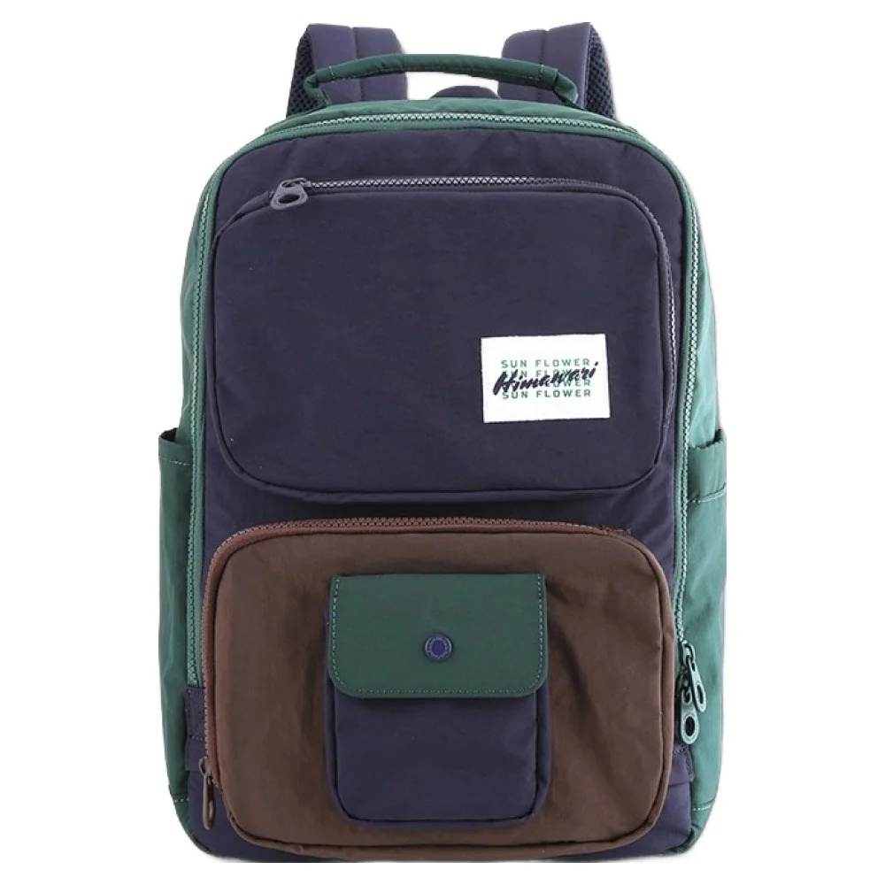

헤드폰을 쓴 채 백팩을 벗을 때 끈이 지나가는 길
산책을 마치고 벤치에 앉으려 합니다. 헤드폰은 귀에 있고 백팩은 양쪽 어깨에 걸려 있습니다. 평소처럼 끈 하나를 빼려는데 손이 귀 쪽으로 올라가거나 헤드폰과 옷깃을 함께 건드릴 수 있습니다. 가방이 편한지는 등에 멘 채 걷는 시간에만 드러나지 않습니다. 몸에서 내려놓는 짧은 순간에도 어깨끈이 지나갈 길과 손이 맡을 일이 있습니다.
어떤 사람은 헤드폰을 먼저 정리한 뒤 가방을 벗는 편이 편할 수 있습니다. 다른 사람은 가방을 안정된 곳으로 내린 뒤 기기를 정리할 수 있습니다. 쓰는 기기와 옷, 가방을 놓을 공간에 따라 익숙한 순서가 달라집니다. 어느 순서에서 손에 물건이 가장 많이 겹치는지 보고 자신에게 맞는 착탈 방법을 찾는 것이 이 장면의 질문입니다.

Himawari No.8029 네이비브라운의 실제 제품 사진에는 몸체 위로 올라오는 어깨끈과 손잡이, 앞면의 크기가 다른 주머니가 보입니다. 외부 크기는 가로 27 × 세로 39 × 폭 14cm입니다. 이 외곽과 사진만으로 특정 헤드폰을 쓴 사람의 착탈이 편하다고 말할 수는 없습니다. 끈이 움직일 경로는 실제 착용 길이와 어깨 주변의 옷에 따라 달라집니다. 제품 사진에서는 어느 부품이 어디에 있는지 읽고 자기 동작에서 다시 봅니다.
가방을 벗는 순간 끈은 몸에 고정된 선으로 남지 않습니다. 어깨에서 팔을 빼는 동안 손과 팔을 따라 움직입니다. 두꺼운 옷깃이나 후드가 그 사이에 있으면 끈이 놓이는 위치도 바뀔 수 있습니다. 헤드폰을 쓰지 않은 날에 익숙했던 동작이 오늘도 그대로 이어지는지 살펴봅니다. 끈이 귀 주변에 가까워지는 때가 어느 순간인지 알면 가방을 메기 전 기기를 정리할 이유가 있는지도 판단할 수 있습니다.
한쪽 끈이 걸리는 느낌이 들면 그 상태에서 더 크게 팔을 돌리기보다 가방을 받칠 수 있는 자리로 동작을 옮깁니다. 무엇이 닿았는지 보이지 않는 상태에서 가방과 헤드폰을 함께 잡아당기면 두 물건의 위치를 구별하기 어렵습니다. 자신의 제품 안내에 맞는 착용을 유지하며 겹친 부분을 살펴봅니다. 기기나 가방에 임의의 끈을 더 연결해 해결하는 일은 별도의 사용 조건이 필요합니다.
기기를 먼저 벗을 계획이라면 그 물건이 잠시 머물 자리가 필요합니다. 벤치 한쪽에 둘 수 있는지, 원래 케이스를 먼저 꺼낼 수 있는지 사용하는 방식에 맞춰 정합니다. 손에 든 헤드폰을 백팩 손잡이나 장식에 걸면 편해 보일 수 있지만, 그 부품이 기기를 매달도록 마련되었는지는 확인해야 합니다. 가방의 빈 고리가 보인다는 사실과 적절한 보관 자리가 있다는 판단을 구별합니다.
헤드폰을 손에 쥔 채 백팩을 벗는다면 남은 손이 무엇을 받치는지 생각해봅니다. 가방 무게를 받칠 손과 어깨끈을 빼는 손이 동시에 필요한데 기기가 한 손을 차지할 수 있습니다. 그때는 가방을 놓을 안정된 면이 있는 곳에서 순서를 다시 고를 수 있습니다. 밖에서 쓰는 방식은 집의 넓은 책상과 다르므로, 자주 멈추는 장소에서 실제로 가능한 움직임을 기준으로 봅니다.
가방을 먼저 내리는 방법을 고를 때에도 몸체를 둘 위치가 정해져 있으면 동작을 나누기 쉽습니다. 한 번에 두 끈을 빼면서 기기 위치까지 조정하기보다 현재 가방이 어느 쪽으로 움직이는지 확인합니다. 귀 주변의 물건을 먼저 정리하면 어깨끈이 움직일 길을 보기 쉬울 수 있습니다. 가방을 먼저 놓는 쪽이 익숙하다면 그 길에서 기기를 건드리는지 살펴봅니다. 익숙해진 뒤에도 다른 겉옷을 입으면 조건이 바뀔 수 있습니다.
벤치에서 일어나 다시 걸을 때에는 정리했던 가방과 헤드폰이 모두 몸으로 돌아옵니다. 가방을 먼저 멘 뒤 기기를 착용하면 끈이 지나가는 동안 귀 주변의 물건을 줄일 수 있습니다. 하지만 어떤 구성이 자신에게 편한지는 직접 확인해야 합니다. 기기의 사용 안내와 가방의 착용 방식을 따르고, 헤드폰의 형태를 억지로 줄여 어깨끈 아래에 넣는 방법으로 맞추지 않습니다.
한쪽 어깨에만 잠깐 걸치는 경우와 양쪽에 메는 경우도 다른 동작입니다. 서둘러 한쪽 끈만 올린 뒤 긴 거리를 걷게 된다면 처음 의도한 사용과 달라질 수 있습니다. 이동을 시작하기 전에 평소 사용할 상태로 정리할 시간을 둡니다. 어깨끈이 비틀려 있거나 옷깃이 접힌 부분을 먼저 보고, 그다음 헤드폰을 사용하는 흐름으로 나눌 수 있습니다. 끈 길이를 바꾸는 일은 그 이후 필요한 경우에 판단합니다.
기기와 백팩을 함께 쓰는 장면을 사진으로 보면 모두 정돈된 순간만 남습니다. 사진에서 보이지 않는 것은 그 자세가 되기 전 손에 무엇을 들었고 가방을 어디에 놓았는지입니다. 승인된 산책 연출 사진도 착용의 분위기를 보여주는 자료입니다. 자신의 헤드폰과 같은 조합을 실제로 시험한 기록으로 읽지 않습니다. 보기 좋은 최종 자세 옆에 자신이 반복할 착탈 과정을 함께 생각해볼 수 있습니다.
백팩을 자주 벗는 날이라면 처음 불편했던 한순간을 떠올려봅니다. 끈이 귀에 가까워졌는지, 벗은 기기를 둘 곳이 없었는지, 손에 든 물건이 너무 많았는지에 따라 바꿀 부분이 달라집니다. 헤드폰 케이스를 어디에 담을지는 별도의 수납 질문으로 남길 수 있습니다. 이 장면에서는 귀와 어깨 사이를 지나는 백팩 끈, 가방을 받칠 손, 기기가 머물 자리를 연결해 자신의 출발 순서를 고르면 됩니다.